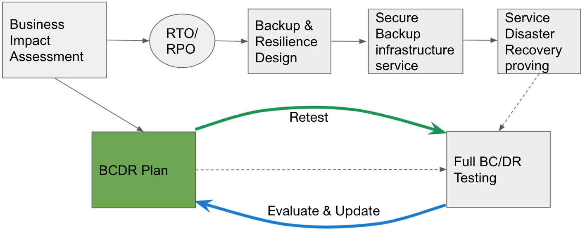

Overview of BC/DR plan preparation
Objective
Outline guidance and approach to enable preparation of a Business Continuity DR Plan to support BC/DR Testing of Local Authority (LA) Council information systems.
This follows on from the BIA definition of the service criticality and the RPO & RTO definition. The agreed RTO/RPO drives the backup design and infrastructure solution, which is then tested as part of a BC/DR exercise at least annually to ensure you can recover in the event of a disaster.
This pack does not cover the BC aspect of BC/DR as that covers non-IT related areas
CTP connections
Mission Critical service resilience and recovery

BC/DR plan definition
A disaster recovery plan is a documented process or set of procedures to execute an organisation’s disaster recovery processes and recover and protect a business IT infrastructure in the event of a disaster. It is “a comprehensive statement of consistent actions to be taken before, during and after a disaster”
To maximise their effectiveness, disaster recovery plans are most effective when updated frequently,
For cyber security incidents which impact IT services the NCSC has guidelines here which advise on the 10 steps to Cyber Security.
Why is a BC/DR plan important?
A disaster recovery (DR) plan is an IT-focused plan that describes the how. The BC/DR plan is a more lower-level plan that’s specific to system and data recovery, ensuring no more than an acceptable amount of data or time is lost. We refer to the acceptable data and time loss as a recovery point (data) and recovery time (time) objectives, often referred to as RTO/RPO.
A BC/DR program is an important form of insurance for your organisation. Most companies that do not have a BC/DR plan and experience a major disaster never recover. However, establishing a BC/DR program can be overwhelming due to scope and complexity.
BC/DR plan activities and content
Organise and document a written plan covering the following as a minimum*:
- Create a disaster recovery team. Regularly review and update team membership.
- Identify and assess disaster risks. Perform a risk assessment.
- Establish priorities for processing and operations i.e. determine critical applications, documents, and resources. (Producing a BIA will support this activity)
- Specify backup and off-site storage procedures.
*Note that this list is not exhaustive. Individual LAs must decide what they deem to be critical to their operation
Collect data:
This includes various lists (eg: employee backup position listing, critical telephone numbers list, master call list, master vendor list, notification checklist), inventories (communications equipment, documentation, office equipment, forms, workgroup and data center computer hardware and software, telephones, etc.), distribution register, software and data files backup/retention schedules, temporary location specifications, any other such lists, materials, inventories, and documentation.
Pre-formatted forms are often used to facilitate the data gathering process.
Develop testing criteria and procedures: reasons for testing include;
Determining the feasibility and compatibility of backup facilities and procedures.
Identifying areas in the plan that need modification.
Providing training to the team managers and team members.
Demonstrating the ability of the organisation to recover.
Providing motivation for maintaining and updating the disaster recovery plan.
Types of tests include: checklist tests, simulation tests, parallel tests, and full interruption tests.
Test the plan: An initial “dry run” of the plan is performed by conducting a structured walk-through test. An actual test-run must then be performed and any problems encountered are corrected.
This cycle of Test, Evaluate and Update (the BCDR Plan) is a key activity to ensure the plan is current, achievable and practicable.
BC/DR continuous improvement cycle